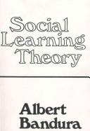

Social Learning Theory
Book·Albert Bandura, 1977·社会学习理论

Bandura's systematic account of observational learning and the mediating role of cognition.
- Author
- Albert Bandura
- Year
- 1977
- Difficulty
- Intermediate
- Kind
- Primary text
- Schools
- Social Learning Theory
- Core theories
- Observational Learning
Editions
- Chinese edition 《社会学习理论》 [美]阿尔伯特·班杜拉 （Albert Bandura） · tr. 陈欣银 / 李伯黍 · 中国人民大学出版社 · 2015 Douban 7.5 (63 ratings) Douban page ↗
- English edition Social Learning Theory Albert Bandura · Prentice Hall, first edition · 1977 Open Library ↗